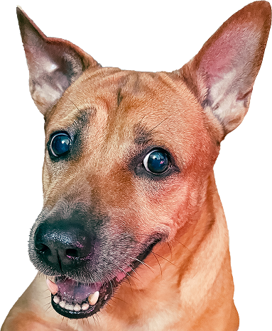

About Stop
Dog Eaters
A locally led, community-driven movement built on transparency, empathy, and the belief that 95% of Vietnamese citizens deserve to be heard.
A locally led, community-driven movement built on transparency, empathy, and the belief that 95% of Vietnamese citizens deserve to be heard.

Lucky is a purebred Vietnamese dog who has lived with his family for nine years. He is not an abstract symbol — he has a name, a personality, a spot on the couch, and a family who would be devastated without him.
His story represents a clash of values that sits at the heart of this campaign. In many Vietnamese households, dogs are deeply loved family members. Yet an unregulated industry continues to treat them as a commodity — often acquiring them through theft.
"Lucky is a priceless treasure to us. He is why we could not stay silent."
Lucky's face is the visual anchor of this campaign — not to provoke, but to remind every person who sees it that behind every statistic is an animal with a story, and a family that loves them.
We are not an organisation imposing foreign values on Vietnamese culture. We are a group of people — many of us Vietnamese — who believe that the 95% of Vietnamese citizens who support ending this trade deserve a voice that is heard at the highest levels of government.
We believe the case for ending the dog meat trade stands on three unassailable pillars: it is cruel, it is dangerous to public health, and it is opposed by the overwhelming majority of the Vietnamese public.
Our approach is transparent, community-led, and non-aggressive. We use facts, personal stories, and public data — not sensationalism.
This movement is driven by Vietnamese voices and reflects Vietnamese public opinion.
Every claim we make is backed by survey data, health research, or documented reports.
All funds are publicly accounted for and used exclusively for community communication and advocacy.
A small, focused team combining design, engineering, social strategy, and AI-powered content operations.
Responsible for the website structure, petition integration, and UX optimisation.
Builds the API infrastructure, fund tracking, CMS-to-Telegram pipeline, and the SDE token launch.
Manages tone, approves AI-generated content, and leads community moderation on Telegram.
Creates visual assets, the "Why We Care" package, and all campaign photography and graphics.
We made a public commitment from day one: every dollar raised goes directly to the cause.
100% of all funds raised through Change.org, Kickstarter, and the SDE token are used exclusively for social activities — specifically, hiring qualified professionals to manage community communication, run awareness campaigns, and coordinate advocacy efforts.
No personal compensation for core team members
No administrative overhead beyond campaign essentials
A public fund dashboard will be available once the campaign has launched. View donation page →